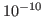
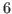
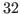
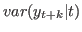

Description
stoch_simul solves a stochastic (i.e. rational
expectations) model, using perturbation techniques.
More precisely, stoch_simul computes a Taylor approximation of
the decision and transition functions for the model. Using this, it
computes impulse response functions and various descriptive statistics
(moments, variance decomposition, correlation and autocorrelation
coefficients). For correlated shocks, the variance decomposition is
computed as in the VAR literature through a Cholesky decomposition of
the covariance matrix of the exogenous variables. When the shocks are
correlated, the variance decomposition depends upon the order of the
variables in the varexo command.
The Taylor approximation is computed around the steady state (see Steady state).
The IRFs are computed as the difference between the trajectory of a variable following a shock at the beginning of period 1 and its steady state value. More details on the computation of IRFs can be found on the DynareWiki.
Variance decomposition, correlation, autocorrelation are only displayed for variables with strictly positive variance. Impulse response functions are only plotted for variables with response larger than .
Variance decomposition is computed relative to the sum of the contribution of each shock. Normally, this is of course equal to aggregate variance, but if a model generates very large variances, it may happen that, due to numerical error, the two differ by a significant amount. Dynare issues a warning if the maximum relative difference between the sum of the contribution of each shock and aggregate variance is larger than 0.01%.
The covariance matrix of the shocks is specified with the
shocks command (see Shocks on exogenous variables).
When a list of VARIABLE_NAME is specified, results are displayed only for these variables.
The stoch_simul command with a first order approximation can benefit from the block decomposition of the model (see block).
Options
ar = INTEGEROrder of autocorrelation coefficients to compute and to print. Default:
5.drop = INTEGERNumber of points (burnin) dropped at the beginning of simulation before computing the summary statistics. Note that this option does not affect the simulated series stored in oo_.endo_simul and the workspace. Here, no periods are dropped. Default:
100.hp_filter = DOUBLEUses HP filter with
 = DOUBLE before computing
moments. If theoretical moments are requested, the spectrum of the model solution is filtered
following the approach outlined in Uhlig (2001).
Default: no filter.
= DOUBLE before computing
moments. If theoretical moments are requested, the spectrum of the model solution is filtered
following the approach outlined in Uhlig (2001).
Default: no filter.
one_sided_hp_filter = DOUBLEUses the one-sided HP filter with
= DOUBLE described in Stock and Watson (1999)
before computing moments. This option is only available with simulated moments.
Default: no filter.
hp_ngrid = INTEGERNumber of points in the grid for the discrete Inverse Fast Fourier Transform used in the HP filter computation. It may be necessary to increase it for highly autocorrelated processes. Default:
512.bandpass_filterUses a bandpass filter with the default passband before computing moments. If theoretical moments are requested, the spectrum of the model solution is filtered using an ideal bandpass filter. If empirical moments are requested, the Baxter and King (1999)-filter is used. Default: no filter.
bandpass_filter = [HIGHEST_PERIODICITY LOWEST_PERIODICITY]Uses a bandpass filter before computing moments. The passband is set to a periodicity of
HIGHEST_PERIODICITYtoLOWEST_PERIODICITY, e.g.  to  quarters if the model frequency is quarterly. Default:[6,32].irf = INTEGERNumber of periods on which to compute the IRFs. Setting
irf=0, suppresses the plotting of IRFs. Default:40.irf_shocks = ( VARIABLE_NAME [[,] VARIABLE_NAME …] )The exogenous variables for which to compute IRFs. Default: all.
relative_irf-
Requests the computation of normalized IRFs. At first order, the normal shock vector of size one standard deviation is divided by the standard deviation of the current shock and multiplied by 100. The impulse responses are hence the responses to a unit shock of size 1 (as opposed to the regular shock size of one standard deviation), multiplied by 100. Thus, for a loglinearized model where the variables are measured in percent, the IRFs have the interpretation of the percent responses to a 100 percent shock. For example, a response of 400 of output to a TFP shock shows that output increases by 400 percent after a 100 percent TFP shock (you will see that TFP increases by 100 on impact). Given linearity at
ordeR=1, it is straightforward to rescale the IRFs stored inoo_.irfsto any desired size. At higher order, the interpretation is different. Therelative_irfoption then triggers the generation of IRFs as the response to a 0.01 unit shock (corresponding to 1 percent for shocks measured in percent) and no multiplication with 100 is performed. That is, the normal shock vector of size one standard deviation is divided by the standard deviation of the current shock and divided by 100. For example, a response of 0.04 of log output (thus measured in percent of the steady state output level) to a TFP shock also measured in percent then shows that output increases by 4 percent after a 1 percent TFP shock (you will see that TFP increases by 0.01 on impact). irf_plot_threshold = DOUBLEThreshold size for plotting IRFs. All IRFs for a particular variable with a maximum absolute deviation from the steady state smaller than this value are not displayed. Default:
1e-10.nocorrDon’t print the correlation matrix (printing them is the default).
nodecompositionDon’t compute (and don’t print) unconditional variance decomposition.
nofunctionsDon’t print the coefficients of the approximated solution (printing them is the default).
nomomentsDon’t print moments of the endogenous variables (printing them is the default).
nographDo not create graphs (which implies that they are not saved to the disk nor displayed). If this option is not used, graphs will be saved to disk (to the format specified by
graph_formatoption, except ifgraph_format=none) and displayed to screen (unlessnodisplayoption is used).graphRe-enables the generation of graphs previously shut off with nograph.
nodisplayDo not display the graphs, but still save them to disk (unless
nographis used).graph_format = FORMATgraph_format = ( FORMAT, FORMAT… )Specify the file format(s) for graphs saved to disk. Possible values are
eps(the default),pdf,figandnone(under Octave, onlyepsandnoneare available). If the file format is set equal tonone, the graphs are displayed but not saved to the disk.noprintDon’t print anything. Useful for loops.
printPrint results (opposite of
noprint).order = INTEGEROrder of Taylor approximation. Acceptable values are
1,2and3. Note that for third order,k_order_solveroption is implied and only empirical moments are available (you must provide a value forperiodsoption). Default:2(except after anestimationcommand, in which case the default is the value used for the estimation).k_order_solverUse a k-order solver (implemented in C++) instead of the default Dynare solver. This option is not yet compatible with the
bytecodeoption (see Model declaration. Default: disabled for order 1 and 2, enabled otherwiseperiods = INTEGER-
If different from zero, empirical moments will be computed instead of theoretical moments. The value of the option specifies the number of periods to use in the simulations. Values of the
initvalblock, possibly recomputed bysteady, will be used as starting point for the simulation. The simulated endogenous variables are made available to the user in a vector for each variable and in the global matrixoo_.endo_simul(see oo_.endo_simul). The simulated exogenous variables are made available inoo_.exo_simul(see oo_.exo_simul). Default:0. qz_criterium = DOUBLEValue used to split stable from unstable eigenvalues in reordering the Generalized Schur decomposition used for solving 1^st order problems. Default:
1.000001(except when estimating withlik_initoption equal to1: the default is0.999999in that case; see Estimation).qz_zero_threshold = DOUBLESee qz_zero_threshold.
replic = INTEGERNumber of simulated series used to compute the IRFs. Default:
1iforder=1, and50otherwise.simul_replic = INTEGERNumber of series to simulate when empirical moments are requested (i.e.
periods> 0). Note that if this option is greater than1, the additional series will not be used for computing the empirical moments but will simply be saved in binary form to the file FILENAME_simul. Default:1.solve_algo = INTEGERSee solve_algo, for the possible values and their meaning.
aim_solverUse the Anderson-Moore Algorithm (AIM) to compute the decision rules, instead of using Dynare’s default method based on a generalized Schur decomposition. This option is only valid for first order approximation. See AIM website for more details on the algorithm.
conditional_variance_decomposition = INTEGERSee below.
conditional_variance_decomposition = [INTEGER1:INTEGER2]See below.
conditional_variance_decomposition = [INTEGER1 INTEGER2 …]Computes a conditional variance decomposition for the specified period(s). The periods must be strictly positive. Conditional variances are given by . For period 1, the conditional variance decomposition provides the decomposition of the effects of shocks upon impact. The results are stored in
oo_.conditional_variance_decomposition(see oo_.conditional_variance_decomposition). The variance decomposition is only conducted, if theoretical moments are requested, i.e. using theperiods=0-option. In case oforder=2, Dynare provides a second-order accurate approximation to the true second moments based on the linear terms of the second-order solution (see Kim, Kim, Schaumburg and Sims (2008)). Note that the unconditional variance decomposition (i.e. at horizon infinity) is automatically conducted if theoretical moments are requested and ifnodecompositionis not set (see oo_.variance_decomposition)pruningDiscard higher order terms when iteratively computing simulations of the solution. At second order, Dynare uses the algorithm of Kim, Kim, Schaumburg and Sims (2008), while at third order its generalization by Andreasen, Fernández-Villaverde and Rubio-Ramírez (2013) is used.
partial_information-
Computes the solution of the model under partial information, along the lines of Pearlman, Currie and Levine (1986). Agents are supposed to observe only some variables of the economy. The set of observed variables is declared using the
varobscommand. Note that ifvarobsis not present or contains all endogenous variables, then this is the full information case and this option has no effect. More references can be found at http://www.dynare.org/DynareWiki/PartialInformation. sylvester = OPTIONDetermines the algorithm used to solve the Sylvester equation for block decomposed model. Possible values for
OPTIONare:defaultUses the default solver for Sylvester equations (
gensylv) based on Ondra Kamenik’s algorithm (see the Dynare Website for more information).fixed_pointUses a fixed point algorithm to solve the Sylvester equation (
gensylv_fp). This method is faster than thedefaultone for large scale models.
Default value is
defaultsylvester_fixed_point_tol = DOUBLEIt is the convergence criterion used in the fixed point Sylvester solver. Its default value is 1e-12.
dr = OPTIONDetermines the method used to compute the decision rule. Possible values for
OPTIONare:defaultUses the default method to compute the decision rule based on the generalized Schur decomposition (see Villemot (2011) for more information).
cycle_reductionUses the cycle reduction algorithm to solve the polynomial equation for retrieving the coefficients associated to the endogenous variables in the decision rule. This method is faster than the
defaultone for large scale models.logarithmic_reductionUses the logarithmic reduction algorithm to solve the polynomial equation for retrieving the coefficients associated to the endogenous variables in the decision rule. This method is in general slower than the
cycle_reduction.
Default value is
defaultdr_cycle_reduction_tol = DOUBLEThe convergence criterion used in the cycle reduction algorithm. Its default value is 1e-7.
dr_logarithmic_reduction_tol = DOUBLEThe convergence criterion used in the logarithmic reduction algorithm. Its default value is 1e-12.
dr_logarithmic_reduction_maxiter = INTEGERThe maximum number of iterations used in the logarithmic reduction algorithm. Its default value is 100.
loglinearSee loglinear. Note that ALL variables are log-transformed by using the Jacobian transformation, not only selected ones. Thus, you have to make sure that your variables have strictly positive steady states.
stoch_simulwill display the moments, decision rules, and impulse responses for the log-linearized variables. The decision rules saved inoo_.drand the simulated variables will also be the ones for the log-linear variables.texRequests the printing of results and graphs in TeX tables and graphics that can be later directly included in LaTeX files.
dr_display_tol = DOUBLETolerance for the suppression of small terms in the display of decision rules. Rows where all terms are smaller than
dr_display_tolare not displayed. Default value:1e-6.contemporaneous_correlationSaves the contemporaneous correlation between the endogenous variables in
oo_.contemporaneous_correlation. Requires thenocorr-option not to be set.spectral_densityTriggers the computation and display of the theoretical spectral density of the (filtered) model variables. Results are stored in
oo_.SpectralDensity, defined below. Default: do not request spectral density estimates
Output
This command sets oo_.dr, oo_.mean, oo_.var and
oo_.autocorr, which are described below.
If option periods is present, sets oo_.skewness,
oo_.kurtosis, and oo_.endo_simul
(see oo_.endo_simul), and also saves the simulated variables in
MATLAB/Octave vectors of the global workspace with the same name as
the endogenous variables.
If option irf is different from zero, sets oo_.irfs
(see below) and also saves the IRFs in MATLAB/Octave vectors of
the global workspace (this latter way of accessing the IRFs is
deprecated and will disappear in a future version).
If the option contemporaneous_correlation is different from 0, sets
oo_.contemporaneous_correlation, which is described below.
Example 1
shocks; var e; stderr 0.0348; end; stoch_simul;
Performs the simulation of the 2nd order approximation of a model
with a single stochastic shock e, with a standard error of
0.0348.
Example 2
stoch_simul(irf=60) y k;
Performs the simulation of a model and displays impulse
response functions on 60 periods for variables y and k.